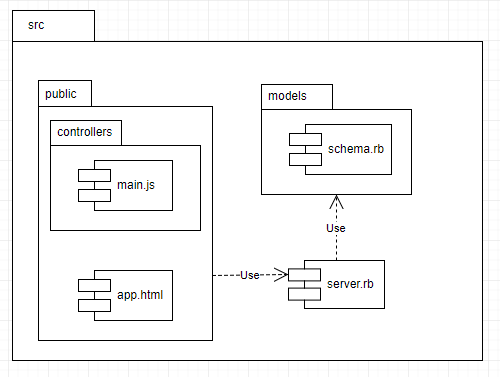

Application Design and Architecture¶ ↑
| Authors |
Andrea Iram Molina Orozco & Diego Trujillo Norberto |
| Date |
November 23, 2017 |
This project is created for the S/W design architecture. The objective of the project is to create an interactive platform for practicing knowledge of Software Design Patterns through the use of a simple quiz application. For the developers the project will help to develop skills like the ability to analyze and synthesize, identifying and solving problems, and efficient use of computer systems.
The directory structure for the application and its documentation is as follows:
quizapp/
├─ doc/ Folder produced by RDoc.
├─ img/ Folder for the documentation’s image files.
└─ src/ Folder for the application’s source code.
├─ public/ Folder for the server’s public documents.
│ └─ controllers/ Folder for the client-side Controllers.
│ └─ css/ Folder for the application’s CSS files.
│ └─ fonts/ Folder for the application’s font files.
│ └─ images/ Folder for the application’s image files.
│ └─ js/ Folder for the application template's Javascript files.
└─ models/ Folder for the application’s models.
The builddocs.sh shell script contains the required
instructions to produce the RDoc documentation if it wasn't previously
included. Run the script from the quizapp directory, typing at
the terminal:
$ bash builddocs.sh
The root of the documentation should now be available at:
quizapp/doc/index.html
The use of any ECMAScript 6 Compliant browser is required to run the application.
Installing and Running the Application¶ ↑
In order to propery run the application, Ruby 2.3 or higer is needed. The following gems need to be installed as well:
To run the server type the following command at the terminal from the
/quizapp/src directory:
$ ruby -I . server.rb
Afterwards, point your web browser the server’s root URL.
4+1 Architectural View Model¶ ↑
Logical View¶ ↑
The logical view contains information about the various parts of the system. In UML the logical view is typically modeled using class diagrams.
For example, the following figure represents the UML class diagram for the
quizapp model in the server and client side:
Server side
Client Side

NOTE: Classes in client-side controllers are not shown in
this documentation, you can check them out in the
/public/controllers/main.js file. Every class and method used
is perfectly documented.
Process View¶ ↑
The process view focuses on the runtime behavior of the system. In UML, activity diagrams are used to model this view. The following example shows the flow of the quizapp while being used by the player.
rf
Development View¶ ↑
The development view focuses on software modules and subsystems. In UML, package diagrams are used to model the development view.

Physical View¶ ↑
The physical view describes the physical deployment of the system, revealing which pieces of software run on what pieces of hardware. In UML, deployment diagrams are used to model the physical view. In the case of this application, most of the heavy lifting done for rendering question components is done by the user's browser.
Scenarios¶ ↑
This view describes the functionality of the system from the perspective from outside world. It contains diagrams describing what the system is supposed to do from a black box perspective. UML use case diagrams are used for this view.
Patterns Used¶ ↑
-
Domain-Specific Language: The
server.rbfile consists of a series of Sinatra routes. Sinatra is a DSL for creating web applications in Ruby. -
Model-View-Controller: The application follows an implementation of the MVC pattern. Model logic is concentrated on the
server.rband/models/schema.rbfiles. Views are placed in the/public/index.htmlfile and controllers in/public/controllers/main.jsfile. -
Single Page Application: Although not strictly a design pattern, the concept of having all components present in the View-Controller layer form start and communicating with the server for data operations is used in this project.
-
Simple Factory: The
ModalFactoryis used to create SWAL Moodal instances by specifying the desired title, message and html contents of the output. Methods are provided for generic error messages as well.
Acknowledgments¶ ↑
All of the questions in this application were taken from Olsen and Ortiz.
We want to thank Professor Ariel Ortiz for being a guide through all these years.We hope that one day we get to proudly call him colleage.
References¶ ↑
Mention here any consulted books or web resources. Examples:
-
IBM Corporation UML Basics: An introduction to the Unified Modeling Language. IBM Developerworks. www.ibm.com/developerworks/rational/library/769.html.
-
R. Olsen. Design Patterns in Ruby. Addison-Wesley, 2007. Available through Safari Books Online.
-
Sinatra Sinatra Docs Sinatra RB /http://sinatrarb.com/documentation.html.
-
The Wikimedia Group The 4+1 architectural view model Wikipedia Accessed November 24, 2017.
-
Ruby-Doc.org. RDoc Markup Reference. ruby-doc.org/stdlib-2.4.1/libdoc/rdoc/rdoc/RDoc/Markup.html Accessed November 3, 2017.